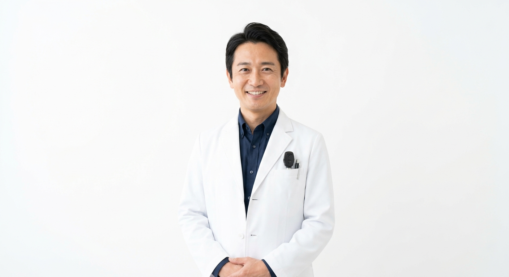
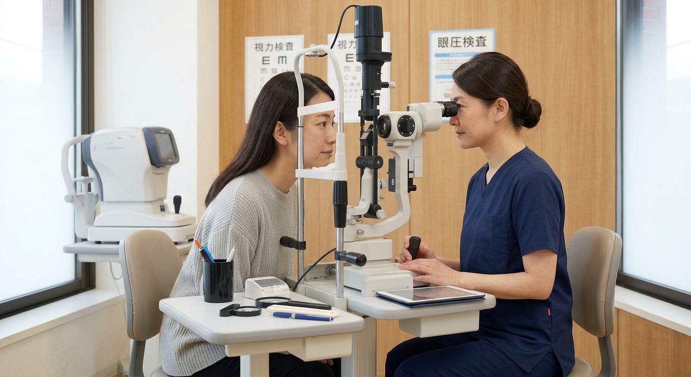
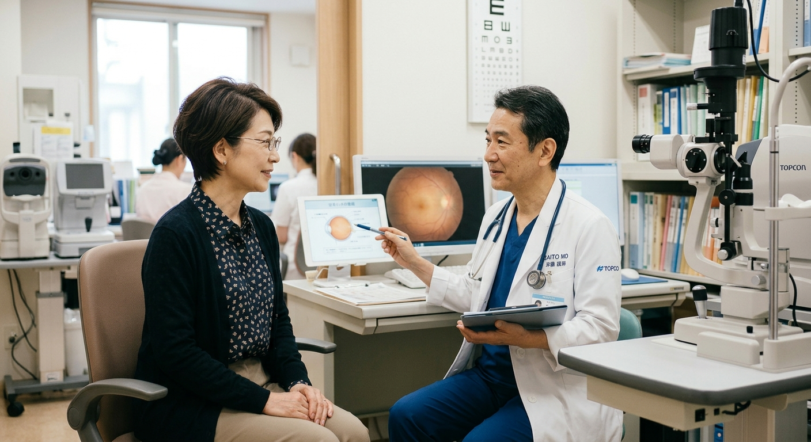

眼科一般診療
日常的な目のトラブルから、年齢に伴う目の病気まで、幅広く診療しています。
大橋眼科眼科一般診療・白内障日帰り手術
札幌市白石区本通6丁目北1-1
見える未来を、ずっとそばで。
札幌市白石区本通にある、丁寧な説明を大切にした“かかりつけ眼科”です。

院長 大橋 勉 Ohashi Eye Clinic
大橋眼科は、日常的な目のトラブルから、コンタクトレンズの処方、年齢を重ねることで起こる目の病気まで、幅広く診療している眼科です。
「見えにくい」「なんとなく気になる」といった小さなお悩みでも、どうぞお気軽にご相談ください。検査の結果や目の状態については、できるだけわかりやすくご説明することを大切にしています。
これからも、地域の皆さまの“かかりつけ眼科”として、見える毎日を長くそばで支えてまいります。
院長 大橋 勉
最近、視力が落ちた気がする、目がかすむ、スマホを見ると目が疲れる、目が乾く。飛蚊症が気になる、白内障かもしれない、緑内障が心配――。そんな目のお悩みはありませんか。気になる症状がありましたら、お一人で悩まずご相談ください。目の状態を丁寧に確認し、わかりやすくご説明いたします。
日常的な目のトラブルから、年齢に伴う目の病気まで、幅広く診療しています。
目のことで気になることがあれば、お気軽にご相談ください。
目の手術に対応しています。下記の各手術についても、まずはご相談ください。
白内障の日帰り手術を行っています。ご希望により、1泊入院もご相談いただけます。
年齢に伴う目の病気として、診療しています。
硝子体に関わる手術に対応しています。
白内障手術の際に選択できるメニューです。
就寝時に装用するコンタクトレンズによる、近視矯正法です。
※オルソケラトロジーは自由診療です。内容・費用などの詳細は、お電話または診察時にお問い合わせください。
日常的な目のトラブルから、コンタクトレンズの処方、年齢に伴う目の病気まで幅広く診療しています。
目の状態や治療について、患者さんに丁寧にご説明することを重視した“かかりつけ眼科”です。
白内障の日帰り手術に対応しています。ご希望により、1泊入院もご相談いただけます。
エントランスのスロープ、エレベーター、トイレなど、お年寄りや車椅子をご利用の患者さんにも配慮しています。往診車も配備しています。
休診日や診療に関する最新のお知らせは、大橋眼科の公式サイトでご確認いただけます。
お知らせを見る（公式サイト）午前 9:00〜12:00／午後 14:30〜18:00
目のことで気になる症状がある方、どこに相談すればよいか迷っている方も、まずはお気軽にお電話ください。
来院が難しい患者さんのために、往診車を配備しています。お気軽にお問い合わせください。
お電話、またはWeb予約、LINE予約をご利用ください。ご不明な点は、お気軽にお問い合わせください。
診療時間内にご来院ください。初診の方は、診察時間終了の60分前までにお越しください。
気になる症状をお伺いし、目の状態を丁寧に確認します。

検査の結果や目の状態、今後の治療について、わかりやすくご説明します。

お会計をして、終了です。
| 医院名 | 大橋眼科 | ||||
|---|---|---|---|---|---|
| 院長 | 大橋 勉 | ||||
| 所在地 | 札幌市白石区本通6丁目北1-1 | ||||
| 電話番号 | 011-864-4656 | ||||
| 診療時間 |
※初診、メガネ・コンタクトレンズ作成ご希望の方は、診察時間終了60分前までの受付にご協力をお願いします。 |
||||
| 休診日 | 木曜午後・土曜午後・日曜・祝日 | ||||
| 診療内容 |
|
||||
| 院内の配慮 | エントランスのスロープ、エレベーター、トイレなど、お年寄りや車椅子をご利用の患者さんにも配慮がなされています。 | ||||
| 往診車 | 来院受診できない患者さんのために往診車を配備しています。お気軽にお問い合わせください。 | ||||
| 公式サイト | お知らせ（公式サイト） |
所在地：札幌市白石区本通6丁目北1-1
目の気になる症状、白内障やオルソケラトロジーについてなど、お気軽にお電話、またはお問い合わせフォームからご連絡ください。
お電話でのお問い合わせ 011-864-4656午前 9:00〜12:00／午後 14:30〜18:00
休診日：木曜午後・土曜午後・日曜・祝日